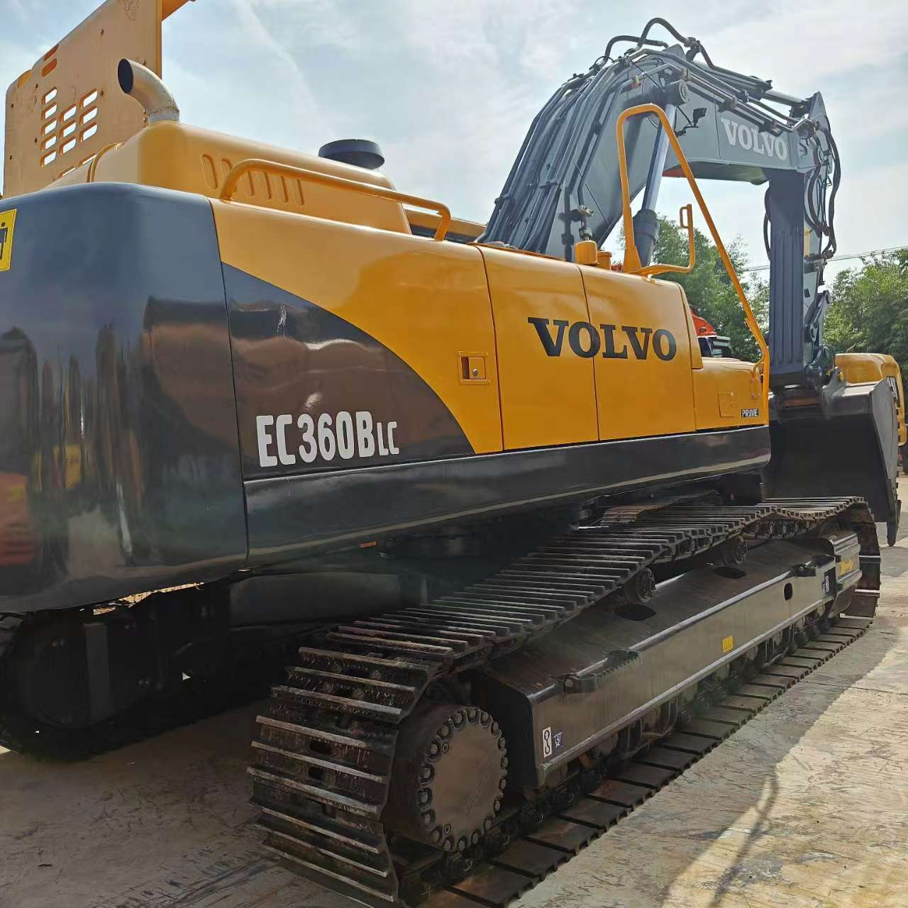

Refurbished Volvo EC360 Excavator
The Volvo EC360 is a versatile and robust tracked excavator designed for heavy-duty applications in construction, mining, and material handling. Known for its powerful performance, fuel efficiency, and operator comfort, the EC360 is widely used for tasks such as road construction, site preparation, demolition, and digging in challenging environments. A refurbished Volvo EC360 offers businesses an opportunity to access this high-performance machine at a fraction of the cost of a new one, making it a popular choice in the heavy equipment industry.
Honestly, it's almost impossible to buy a brand new excavator from China. They either don't exist or are made in China. If a Chinese seller tells you their Caterpillar/Komatsu/Volvo/Kobelco/Hitachi is brand new, they're lying. Therefore, a refurbished excavator is your best bet.

Here are the detailed specifications for a refurbished Volvo EC360BLC excavator:
Operating Weight and Dimensions
- Operating Weight: 36,000–38,000 kg
- Transport Length: ~11.2–11.5 meters
- Transport Width: ~3.2–3.4 meters
- Transport Height: ~3.5–3.7 meters
- Tail Swing Radius: ~3.6–3.8 meters
- Ground Clearance: ~470–500 mm
- Track Width: 600 mm standard
Engine and Powertrain
- Engine Model: Volvo D12C (Tier 2 compliant)
- Rated Power Output: ~202–210 kW (270–282 hp) @ 1,800 rpm
- Maximum Torque: ~1,600–1,750 Nm
- Fuel Tank Capacity: ~600–650 liters
- Travel Speed: 3.0–5.0 km/h
- Swing Speed: ~9.0 rpm
- Gradeability: Up to 35°
Hydraulic System
- Main Pump Type: Variable displacement axial piston pumps
- Flow Rate: ~2 × 320–340 L/min
- System Pressure: Up to 34.3 MPa
- Hydraulic Oil Capacity: ~450–500 liters
- Boom/Arm/Bucket Priority: Load-sensing with flow sharing
- Regeneration System: Reduces cavitation and improves cycle speed
Performance Metrics
- Bucket Capacity: 1.6–2.3 m³ (SAE heaped)
- Max Digging Depth: ~7.5–7.8 meters
- Max Reach (Horizontal): ~11.5–12.0 meters
- Max Dump Height: ~6.8–7.0 meters
- Bucket Digging Force: ~210–220 kN
- Arm Digging Force: ~160–170 kN
Cab and Operator Features
- Cab Type: ROPS/FOPS certified
- Display: Contronics system with diagnostics and fuel tracking
- Controls: Electro-hydraulic joysticks with customizable sensitivity
- Comfort: Air suspension seat, climate control, low vibration cab
- Visibility: Sliding windshield, wide glass area, rear-view camera
Smart Features and Efficiency
- Fuel Efficiency: Auto idle, ECO mode, load-sensing hydraulics
- Emissions Control: Tier 2 compliant (no DPF/SCR)
- Telematics Ready: Volvo CareTrack (optional on later refurbishments)
- Power Boost: Enhanced digging and lifting forces on demand
Attachments Compatibility
- Standard Bucket: 1.6–2.3 m³
- Optional Tools: Hydraulic breaker, demolition shear, compactor, ripper
- Quick Coupler: Hydraulic or manual options available
Refurbishment Scope
Refurbished EC360 units typically include:
- Engine Overhaul: Turbocharger, injectors, seals, cooling system
- Hydraulic Restoration: Pump recalibration, valve block testing, hose replacement
- Electrical Diagnostics: Monitor, sensors, wiring harness
- Cab Reconditioning: Seat, joysticks, HVAC, repainting
- Structural Repairs: Boom/bucket welding, bushing replacement, undercarriage rebuild
Overview of the Volvo EC360 Excavator
The Volvo EC360 is part of Volvo's large excavator series, designed to handle demanding tasks in tough working conditions. This machine is well-regarded for its strong lifting and digging capacities, fuel efficiency, and overall reliability. Whether it's moving heavy loads, digging deep trenches, or performing general earthworks, the EC360 excels in a wide range of applications.
Key Specifications of the Volvo EC360
-
Operating Weight: Approximately 36,000–38,000 kg (79,200–83,600 lbs)
-
Engine Power: 186 kW (249 hp)
-
Max Digging Depth: Up to 7.5 meters (24.6 feet)
-
Max Reach: Approximately 10.7 meters (35.1 feet)
-
Bucket Capacity: Typically 1.6–2.4 cubic meters (56–85 cubic feet)
-
Fuel Tank Capacity: Around 400 liters (105 gallons)
-
Travel Speed: Up to 5.4 km/h (3.4 mph)
These specifications reveal that the EC360 is designed to handle significant weight and depth, making it an ideal choice for large-scale excavation projects, such as trenching and digging in deep earth.
Engine and Performance Efficiency
The Volvo EC360 is powered by a highly efficient engine that provides optimal performance while maintaining fuel economy.
-
Engine Power: The Volvo EC360 is equipped with a Volvo D7E engine, delivering 186 kW (249 hp) of power. This engine enables the machine to perform demanding tasks, such as lifting heavy materials or digging through tough soil, with ease. The engine also ensures efficient fuel usage, helping reduce operating costs during long hours of operation.
-
Fuel Efficiency: The EC360 is designed for excellent fuel efficiency, allowing it to perform tasks without consuming excessive amounts of fuel. The machine features a variable-speed hydraulic system, which helps optimize power usage depending on the work being performed, reducing fuel consumption during less demanding tasks.
-
Emissions Compliance: The machine is built to meet the Tier 3 emissions standards, ensuring a more environmentally friendly operation compared to older models. This is especially beneficial for operators working in regions with strict environmental regulations.
Hydraulics and Performance Capabilities
The Volvo EC360 is known for its strong hydraulic system, which is a key factor in its impressive performance.
-
Advanced Hydraulic System: The EC360 features an electronically controlled hydraulic system that adjusts the flow of hydraulic fluid based on the task at hand. This results in faster cycle times, smoother operations, and reduced fuel consumption during lower-load work.
-
Powerful Digging Force: The hydraulic system enables the EC360 to achieve high digging force, allowing it to perform tasks such as digging in tough, compacted earth or lifting heavy materials with ease. Whether performing trenching, grading, or heavy lifting, the hydraulic capabilities of the EC360 are a key factor in its performance.
-
Enhanced Control: The hydraulic system provides smooth control over boom, bucket, and arm movements, allowing the operator to make precise adjustments even in difficult conditions. This is essential for high-precision tasks like grading or material placement.
Durability and Construction
Volvo excavators are renowned for their durability and ability to withstand the rigors of tough job sites, and the EC360 is no exception.
-
Heavy-Duty Undercarriage: The EC360 is built with a durable undercarriage designed to withstand harsh conditions such as muddy, uneven, or rocky terrain. The undercarriage is reinforced to provide stability and longevity, even when working in difficult environments.
-
High-Strength Materials: The EC360 is constructed using high-strength materials such as reinforced steel, which improves its overall durability. The robust construction helps the machine withstand the wear and tear of daily operation, reducing the need for frequent repairs and extending its operational life.
-
Track System: The EC360 features a reliable and durable track system designed for maximum traction. Whether working on soft ground, slopes, or rough terrain, the EC360 offers excellent mobility and stability.
Operator Comfort and Safety
Operator comfort and safety are essential aspects of the Volvo EC360, which is designed to provide a comfortable and safe working environment for extended hours of operation.
-
Spacious Cab: The EC360 is equipped with a spacious operator cab that offers excellent visibility and ergonomic controls. The cab is designed for comfort, with a high-quality seat, adjustable armrests, and clear visibility of the machine’s work area. This reduces operator fatigue and enhances overall productivity.
-
User-Friendly Controls: The EC360 features intuitive, easy-to-use controls that are designed to improve operational efficiency. The joysticks and buttons are designed for comfort and ease of use, even during long working hours.
-
Enhanced Visibility: The machine offers enhanced visibility, including clear views of the boom and bucket, which helps reduce the risk of accidents. Safety is further improved by features like automatic swing brake, working light options, and warning systems that alert the operator to any potential hazards.
-
Noise and Vibration Reduction: The operator cab of the EC360 is designed to reduce noise and vibrations, creating a more comfortable environment during long shifts. This is essential for maintaining productivity and ensuring operator well-being.
Benefits of Choosing a Refurbished Volvo EC360
Opting for a refurbished Volvo EC360 excavator comes with a range of benefits, offering the same high performance as a new model but at a significantly lower cost.
-
Lower Initial Investment: A refurbished EC360 can save businesses between 20-40% compared to purchasing a new unit. This makes it an attractive option for companies looking to save on capital expenditure while still acquiring a reliable piece of machinery.
-
Comprehensive Refurbishment Process: Refurbished EC360 machines undergo a rigorous inspection and repair process to ensure that they meet high-quality standards. This includes checking and replacing key components like the engine, hydraulic system, undercarriage, and electrical systems. The goal is to bring the machine up to like-new condition while addressing any wear and tear from previous use.
-
Warranty and Support: Many refurbished EC360 excavators come with a warranty, giving buyers peace of mind knowing that they are covered in the event of unexpected issues. Additionally, support services are often available, ensuring that any repairs or maintenance are taken care of by professionals.
-
Sustainability: By opting for a refurbished machine, businesses are making a sustainable choice by reducing the need for new manufacturing and extending the life of existing equipment. This reduces environmental waste and helps conserve resources.
Maintenance Tips for the Volvo EC360
Regular maintenance is crucial to ensure the longevity and optimal performance of the Volvo EC360. Here are a few essential maintenance tips:
-
Hydraulic System: Keep the hydraulic fluid at the correct level and replace filters as needed. Check for leaks in hoses and fittings to prevent performance issues.
-
Engine Care: Regularly change the engine oil and inspect the air filters. Ensure the cooling system is in good working condition to prevent overheating.
-
Undercarriage: Inspect the tracks and undercarriage regularly for signs of wear and tear. Clean the undercarriage to remove debris and dirt that could cause premature wear.
-
Electrical Systems: Keep the electrical components clean and inspect connections for corrosion. Regularly check battery levels and condition.
-
General Inspections: Periodically check the fuel system, exhaust, and cooling systems to ensure they are working efficiently. Address any small issues before they turn into larger problems.
Conclusion
The Volvo EC360 is a powerful, durable, and versatile excavator that performs well in challenging environments and demanding applications. Whether it's used for digging, lifting, or grading, the EC360 provides consistent performance and reliability. By choosing a refurbished Volvo EC360, businesses can access the benefits of this high-performance machine at a fraction of the cost of a new model, making it a smart choice for cost-conscious operators. With proper maintenance, the EC360 can continue to deliver exceptional results for many years, making it a valuable investment for any project.
Our Commitment
- 2 years / 4000 hours warranty.
- EPA certified.
- No sweatshop labor.
Contacts

- [email protected]
- Youtube Instagram Facebook
- Navigation: G206 (Sishu Bridge) in Changfeng County, Hefei City, Anhui Province, 200 meters north to the east